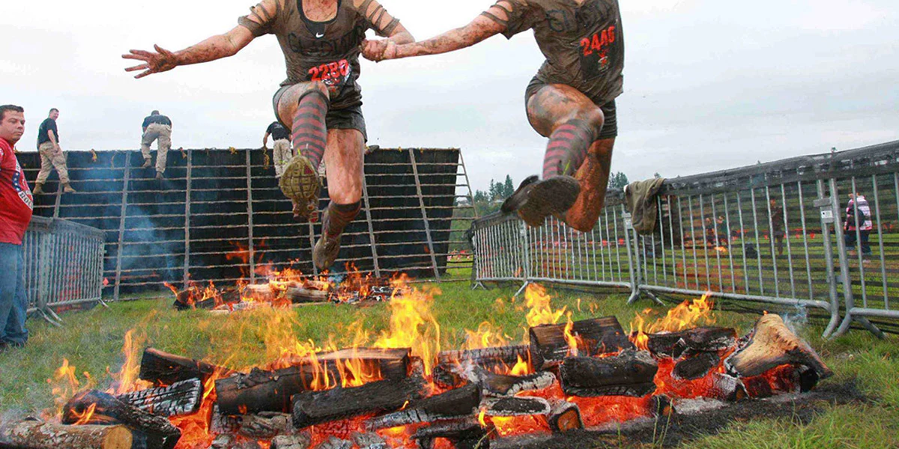

Este sitio está diseñado para dar a conocer el OCR en Chile. Las carreras de obstáculos OCR (por las siglas de su nombre inglés Obstacles Courses Racing) es un deporte en el que los competidores deben superar varios desafíos físicos en forma de obstáculos. Estos incluyen escalar paredes, transportar objetos pesados, atravesar cuerpos de agua, gatear debajo del alambre de púas y saltar a través del fuego. Muchos obstáculos son similares a los utilizados durante el entrenamiento militar, mientras que otros son exclusivos de las carreras de obstáculos y se emplean para evaluar resistencia, fuerza, velocidad y destreza.
Las carreras varían en cuanto a dificultad y distancia. En algunos eventos se combinan con carreras de trail, de pista o cross-country.
